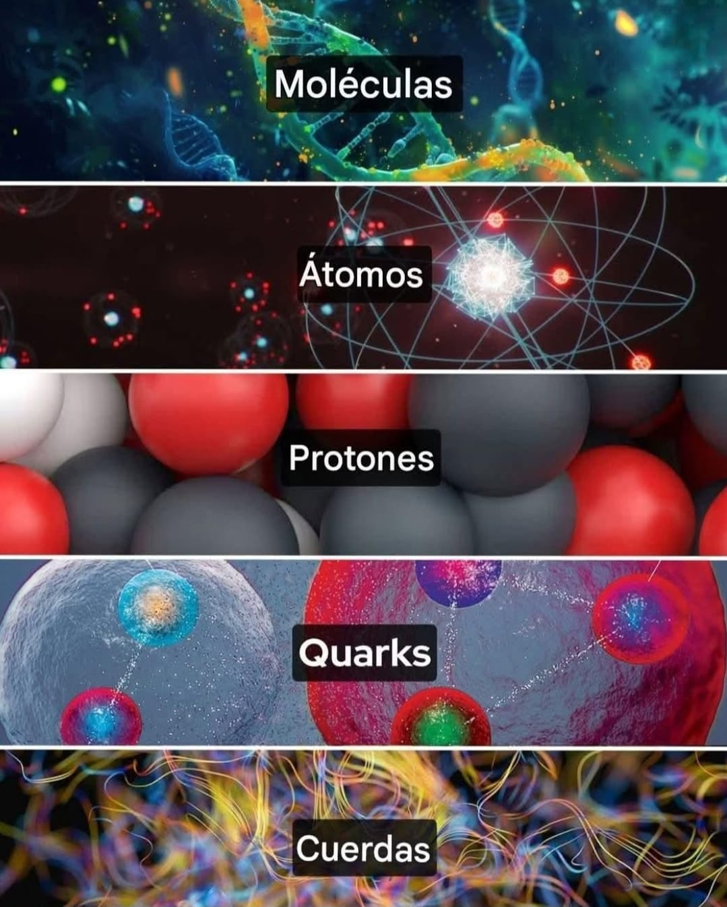
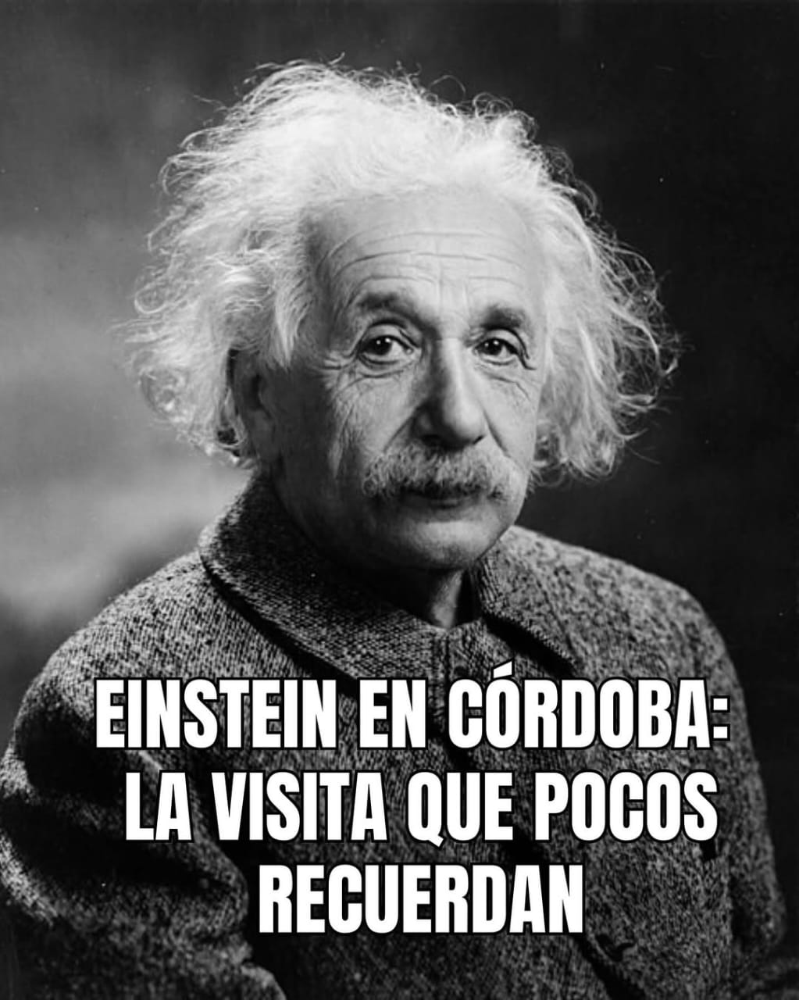

Gabriel Frávega
Ingeniero en Tecnología (UNC) - ARGENTINA/ITALIA - IHA®-IHA3® (2024/2025)
INTELIGENCIA HUMANA APLICADA: IHA®
LA STARTUP (CON SESION DE DERECHOS EN GESTIÓN) BASADA EN LA INTELIGENCIA HUMANA APLICADA: IHA®, lanza la primera fase, de su proyecto, e implementación, basados en un ECOSISTEMA DISRUPTIVO, impulsado por su motor tecnológico IHA®, 100 veces superior a los estructurados en la "IA", con una performance energética, que supera los estándares internacionales. El declive e imprecisiones observados en los sistemas existentes, que colapsan continuamente, solo podrán ser utilizados, en determinadas áreas de la tecnología y muy pocas, en las mega construcciones, con poca eficiencia y eficacia. La IHA®, está sustancialmente más adelantada que los sistemas basados en la "IA". Consta de marcos referenciales, respeta los ecosistemas biológicos y sociales, potenciando el conocimiento, a niveles inimaginables. Las propuestas serán receptadas, solo en el e-mail: gfravega@hotmail.com, debiendo contener una identificación clara de los inversores y/o empresas, y su domicilios jurídico y físico. Se contempla en la fase 1, una inversión inicial, en activos digitales.
A STARTUP BASED ON APPLIED HUMAN INTELLIGENCE: IHA® launches the first phase of its project and implementation, based on a DISRUPTIVE ECOSYSTEM. Powered by its IHA® technological engine, 100 times superior to those structured with AI, with energy performance that exceeds international standards. The deterioration and inaccuracies observed in existing systems, which continually collapse, can only be used in certain technological areas and very few in mega-constructions, with little efficiency and effectiveness. IHA® is substantially more advanced than AI-based systems. It consists of reference frameworks, respects biological and social ecosystems, and enhances knowledge to unimaginable levels. Proposals will be accepted only by email: gfravega@hotmail.com, and must clearly identify the investors and/or companies, and their legal and physical addresses. Phase 1 contemplates an initial investment in digital assets.
基於應用人類智慧的新創公司：IHA® 啟動其基於顛覆性生態系統的計畫及實施第一階段。 該生態系統由 IHA® 技術引擎驅動，其性能比基於人工智慧構建的系統高出 100 倍，能源性能超越國際標準。 現有系統不斷崩潰，存在性能下降和不準確性，這些缺陷只能在某些技術領域應用，在大型建築中也很少見，效率和效益也較低。 IHA® 遠超過人工智慧為基礎的系統。 它包含參考框架，尊重生物和社會生態系統，並將知識提升到難以想像的水平。 專案提案僅透過電子郵件 gfravega@hotmail.com 提交，且必須明確註明投資者和/或公司及其法定和實際地址。 第一階段計劃對數位資產進行初始投資。 Jīyú yìngyòng rénlèi zhìhuì de xīn chuàng gōngsī:IHA® qǐdòng qí jīyú diānfù xìng shēngtài xìtǒng de jìhuà jí shíshī dì yī jiēduàn. Gāi shēngtài xìtǒng yóu IHA® jìshù yǐnqíng qūdòng, qí xìngnéng bǐ jīyú réngōng zhìhuì gòujiàn de xìtǒng gāo chū 100 bèi, néngyuán xìngnéng chāoyuè guójì biāozhǔn. Xiànyǒu xìtǒng bùduàn bēngkuì, cúnzài xìngnéng xiàjiàng hé bù zhǔnquè xìng, zhèxiē quēxiàn zhǐ néng zài mǒu xiē jìshù lǐngyù yìngyòng, zài dàxíng jiànzhú zhōng yě hěn shǎo jiàn, xiàolǜ hé xiàoyì yě jiào dī. IHA® yuǎn chāoguò réngōng zhìhuì wèi jīchǔ de xìtǒng. Tā bāohán cānkǎo kuàngjià, zūn chóng shēngwù hé shèhuì shēngtài xìtǒng, bìng jiāng zhīshì tíshēng dào nányǐ xiǎngxiàng de shuǐpíng. Zhuān'àn tí'àn jǐn tòuguò diànzǐ yóujiàn gfravega@hotmail.Com tíjiāo, qiě bìxū míngquè zhùmíng tóuzī zhě hé/huò gōngsī jí qí fǎdìng hé shíjì dìzhǐ. Dì yī jiēduàn jì huà duì shùwèi zīchǎn jìnxíng chūshǐ tóuzī.
IHA® - motor tecnológico universal
Motor Tecnológico Universal: IHA® – 7 de septiembre de 2025
1. Propósito y ética
Este motor tecnológico ha sido diseñado con un fin positivo para la humanidad.
Su función principal no es monopolizar, controlar ni someter mercados, sino operar dentro de un ecosistema equilibrado, seguro y ético.
A diferencia de sistemas históricos que se convirtieron en herramientas monopólicas, este motor está concebido para evitar cualquier concentración de poder o restricción de uso, asegurando su accesibilidad y compatibilidad universal.
2. Universalidad y compatibilidad
Es aplicable en todas las ramas de la tecnología, sin depender de arquitecturas o chips específicos.
Su diseño garantiza que no pueda ser explotado como instrumento monopólico, respetando la diversidad tecnológica y la soberanía de los usuarios o entidades que lo utilicen.
3. Innovación y potencia
Incorpora el TFC® (Teorema de la Frontera del Conocimiento®), validado matemáticamente, superando ampliamente las capacidades de la IA actual, aunque integrando sus herramientas de manera estratégica para potenciar el sistema.
Su eficiencia, alcance y capacidad disruptiva lo posicionarán como el motor tecnológico más avanzado del mundo, capaz de generar impactos positivos a escala global.
4. Control y seguridad
El sistema es cerrado y seguro, con control de acceso inicial exclusivo, garantizando que su uso sea autorizado y supervisado.
Ni siquiera el creador podrá abrir el sistema después de su lanzamiento sin la llave inicial, asegurando máxima integridad, cohesión y protección frente a mal uso.
5. Potencial económico y estratégico
La cesión de derechos de este motor ofrece a quien la obtenga la posibilidad de aprovechar beneficios económicos significativos, sin desembolso inicial, dentro de un marco seguro, ético y legal.
Su integración con otros 50 proyectos tecnológicos refuerza su impacto y escalabilidad, constituyendo un ecosistema de innovación global.
6. Compromiso con la humanidad
Este motor tecnológico no persigue intereses ideológicos, religiosos ni económicos monopólicos.
Su diseño, propósito y estructura buscan generar un aporte real, tangible y positivo a la humanidad, cumpliendo estándares que ninguna otra tecnología comparable actualmente logra.
Registro: 8 de septiembre de 2025
Universal Technology Engine: IHA® – September 7, 2025
1. Purpose and Ethics
This technology engine has been designed with a positive purpose for humanity.
Its primary function is not to monopolize, control, or subjugate markets, but rather to operate within a balanced, secure, and ethical ecosystem.
Unlike historical systems that became monopolistic tools, this engine is designed to avoid any concentration of power or restriction on use, ensuring universal accessibility and compatibility.
2. Universality and Compatibility
It is applicable to all branches of technology, without relying on specific architectures or chips.
Its design guarantees that it cannot be exploited as a monopolistic instrument, respecting technological diversity and the sovereignty of the users or entities that utilize it.
3. Innovation and Power
It incorporates the mathematically validated TFC® (Frontier of Knowledge Theorem®), far surpassing the capabilities of current AI, while strategically integrating its tools to enhance the system.
Its efficiency, reach, and disruptive capacity will position it as the world's most advanced technological engine, capable of generating positive impacts on a global scale.
4. Control and Security
The system is closed and secure, with exclusive initial access control, ensuring that its use is authorized and supervised.
Not even the creator will be able to open the system after its launch without the initial key, ensuring maximum integrity, cohesion, and protection against misuse.
5. Economic and Strategic Potential
The transfer of rights to this engine offers whoever obtains it the possibility of taking advantage of significant economic benefits, without an initial outlay, within a secure, ethical, and legal framework.
Its integration with 50 other technological projects reinforces its impact and scalability, constituting a global innovation ecosystem.
6. Commitment to Humanity
This technological engine does not pursue ideological, religious, or monopolistic economic interests.
Its design, purpose, and structure seek to generate a real, tangible, and positive contribution to humanity, meeting standards that no other comparable technology currently achieves.
Registration: September 7, 2025
通用技術引擎：IHA® – 2025 年 9 月 7 日
1. 宗旨與倫理
這款科技引擎的設計初衷是為了造福人類。
其主要功能並非壟斷、控製或壓制市場，而是在一個平衡、安全且合乎倫理的生態系統中運作。
與歷史上淪為壟斷工具的系統不同，該引擎的設計旨在避免權力集中或使用限制，確保普遍的可及性和相容性。
2. 通用性與相容性
它適用於所有技術領域，無需依賴特定的架構或晶片。
其設計確保其不會被用作壟斷工具，尊重技術多樣性以及使用它的使用者或實體的主權。
3. 創新與力量
它融合了經過數學驗證的 TFC®（知識前沿定理），遠超現有人工智慧的能力，同時策略性地整合其工具以增強系統。
其效率、覆蓋範圍和顛覆性能力將使其成為全球最先進的技術引擎，能夠在全球範圍內產生積極影響。
4. 控制與安全
該系統封閉且安全，擁有獨特的初始存取控制，確保其使用獲得授權並受到監督。
即使是創建者，在系統啟動後，如果沒有初始密鑰，也無法打開系統，從而最大程度地確保了系統的完整性、凝聚力和防止濫用。
5. 經濟與戰略潛力
該引擎的權利轉讓，使任何獲得它的人都能在安全、合乎道德和法律的框架內，無需任何前期投入，獲得巨大的經濟效益。
它與其他50個技術項目的整合增強了其影響力和可擴展性，構成了全球創新生態系統。
6. 服務人類
該技術引擎不追求意識形態、宗教或壟斷性經濟利益。
其設計、目的和結構旨在為人類做出真實、切實和積極的貢獻，達到目前其他同類技術無法達到的標準。報名截止日期：2025年9月7日
Tōngyòng jìshù yǐnqíng:IHA® – 2025 nián 9 yuè 7 rì
1. Zōngzhǐ yǔ lúnlǐ
zhè kuǎn kējì yǐnqíng de shèjì chūzhōng shì wèile zàofú rénlèi.
Qí zhǔyào gōngnéng bìngfēi lǒngduàn, kòngzhì huò yāzhì shìchǎng, ér shì zài yīgè pínghéng, ānquán qiě héhū lúnlǐ de shēngtài xìtǒng zhōng yùnzuò.
Yǔ lìshǐ shàng lún wèi lǒngduàn gōngjù de xìtǒng bùtóng, gāi yǐnqíng de shèjì zhǐ zài bìmiǎn quánlì jízhōng huò shǐyòng xiànzhì, quèbǎo pǔbiàn de kě jí xìng hé xiāng róng xìng.
2. Tōngyòng xìng yǔ xiāng róng xìng
tā shìyòng yú suǒyǒu jìshù lǐngyù, wúxū yīlài tèdìng de jiàgòu huò jīngpiàn.
Qí shèjì quèbǎo qí bù huì bèi yòng zuò lǒngduàn gōngjù, zūnzhòng jìshù duōyàng xìng yǐjíshǐyòng tā de shǐyòng zhě huò shítǐ de zhǔquán.
3. Chuàngxīn yǔ lìliàng
tā rónghéle jīngguò shùxué yànzhèng de TFC®(zhīshì qiányán dìnglǐ), yuǎn chāo xiànyǒu réngōng zhìhuì de nénglì, tóngshí cèlüè xìng dì zhěnghé qí gōngjù yǐ zēngqiáng xìtǒng.
Qí xiàolǜ, fùgài fànwéi hé diānfù xìng nénglì jiāng shǐ qí chéngwéi quánqiú zuì xiānjìn de jìshù yǐnqíng, nénggòu zài quánqiú fànwéi nèi chǎnshēng jījí yǐngxiǎng.
4. Kòngzhì yǔ ānquán
gāi xìtǒng fēngbì qiě ānquán, yǒngyǒu dútè de chūshǐ cún qǔ kòngzhì, quèbǎo qí shǐyòng huòdé shòuquán bìng shòudào jiāndū.
Jí shǐ shì chuàngjiàn zhě, zài xìtǒng qǐdòng hòu, rúguǒ méiyǒu chūshǐ mì yào, yě wúfǎ dǎkāi xìtǒng, cóng'ér zuìdà chéngdù de quèbǎole xìtǒng de wánzhěng xìng, níngjùlì hé fángzhǐ lànyòng.
5. Jīngjì yǔ zhànlüè qiánlì
gāi yǐnqíng de quánlì zhuǎnràng, shǐ rènhé huòdé tā de rén dōu néng zài ānquán, héhū dàodé hé fǎlǜ de kuàngjià nèi, wúxū rènhé qiánqí tóurù, huòdé jùdà de jīngjì xiàoyì.
Tā yǔ qítā 50 gè jìshù xiàngmùdì zhěnghé zēngqiángle qí yǐngxiǎng lì hàn kě kuòzhǎn xìng, gòuchéngle quánqiú chuàngxīn shēngtài xìtǒng.
6. Fúwù rénlèi
gāi jìshù yǐnqíng bù zhuīqiú yìshí xíngtài, zōngjiào huò lǒngduàn xìng jīngjì lìyì.
Qí shèjì, mù dì hé jiégòu zhǐ zài wéi rénlèi zuò chū zhēnshí, qièshí hé jījí de gòngxiàn, dádào mùqián qítā tónglèi jìshù wúfǎ dádào de biāozhǔn. Bàomíng jiézhǐ rìqí:2025 Nián 9 yuè 7 rì
MOTOR TECNOLÓGICO


